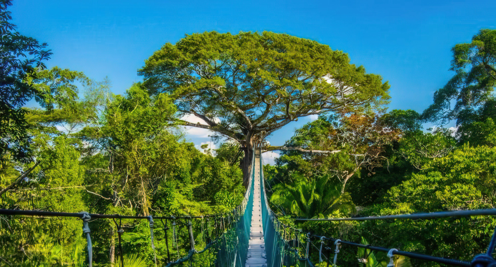

Agencia de tours ANDES FLY
Nunca es tarde para conocer cada rincon de nuestro pais
¿Deseas darte un tiempo para disfrutar de la vida o estar en familia?
Atrévete a optar por nuestros tours y crea momentos únicos en los diversos lugares que nuestro país ofrece.
Nuestros destinos
COSTA
Conoce más
Top 3 lugares mas visitados
Paracas

Paracas es una ciudad de la costa oeste de Perú. Es conocida por sus playas, como El Chaco, ubicada en la bahía resguardada de Paracas. La ciudad es un punto de partida hacia las islas Ballestas deshabitadas, hogar de lobos marinos, pelícanos y pingüinos de Humboldt. La escabrosa Reserva Nacional de Paracas tiene abundante fauna y se extiende por desierto, océano, islas y la península de Paracas.
Conoce másMachuPichu

Descubre una de las 7 maravillas del mundo de la region andina peruana en esta aventura que sera una excursion de 4 dias y 3 noche. Tomara un sendero de la selva inca desde Cusco a Machu Picchu. En el camino, participará en actividades de aventura como ciclismo, rafting, tirolesa y senderismo, todo mientras disfruta de las impresionantes vistas de las montañas y ríos peruanos.
Conoce másTambopata
Aventúrese en las profundidades de la selva amazónica y explore el diverso Parque Nacional Tambopata en una excursión de 4 días desde Puerto Maldonado. Descubra la rica biodiversidad de la selva mientras recorre los paseos nocturnos de los caimanes, visite la Isla de los Monos, navegue por el lago Sandoval y emprenda algunas excursiones por la selva. Esta es una gran oportunidad para desconectar y sumergirse en la hermosa naturaleza del Perú durante su viaje
Conoce más